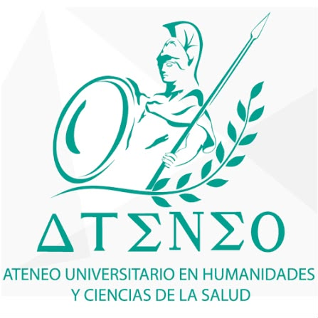
Directorio inclusivo sobre la discapacidad
Introducción
La discapacidad forma parte de la diversidad de la sociedad y puede presentarse de diferentes maneras. Las personas con discapacidad tienen derecho a recibir atención, servicios, información y oportunidades que favorezcan su bienestar, autonomía, participación e inclusión social.
Propósito
Este directorio inclusivo tiene como propósito reunir información de organizaciones e instituciones que brindan apoyo a personas con discapacidad. Se incluyen datos como el nombre de organización, dirección, teléfono y servicios que ofrece, para facilitar el acceso a recursos de orientación, atención, rehabilitación, inclusión y defensas de derechos a nivel estatal (Oaxaca), nivel nacional (México) y a nivel mundial.
Desarrollo del Proyecto
Instituciones
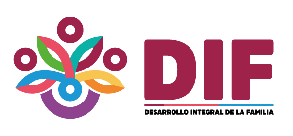
Municipio: Oaxaca de Juárez
Dirección: Vicente Guerrero No. 114, Col. Miguel Alemán, Oaxaca de Juárez, Oaxaca.
Teléfono: 951 501 5050
¿Qué apoyo ofrece?
Brinda programas de asistencia social y atención a personas con discapacidad. Cuenta con diferentes servicios, entre ellos apoyos funcionales, rehabilitación y atención especializada. (difoaxaca.gob.mx)
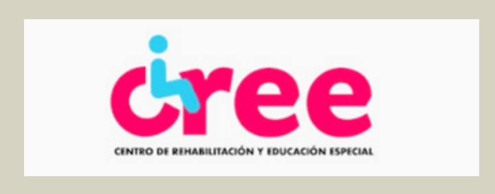
Municipio: San Bartolo Coyotepec
Dirección: Séptima Privada de Aldama s/n, San Bartolo Coyotepec, Oaxaca.
Teléfono: 951 551 0586
¿Qué apoyo ofrece?
Ofrece medicina física y de rehabilitación, audiología, psicología, odontología, terapia física, terapia ocupacional, terapia de lenguaje, trabajo social y laboratorio de órtesis y prótesis. (Gobierno de Oaxaca)
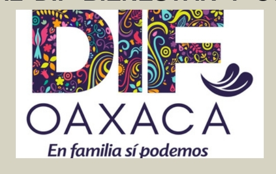
Estado: Oaxaca
Institución: Sistema DIF Oaxaca
¿Qué apoyo ofrece?
Brinda atención de segundo nivel a personas con discapacidad motriz, visual, neuronal y auditiva; así como a personas con discapacidades temporales o permanentes. Cuenta con servicios de rehabilitación y neurorehabilitación. (Gobierno de Oaxaca)
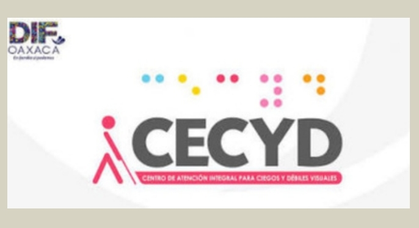
Municipio: San Bartolo Coyotepec
Dirección: Séptima Privada de Aldama s/n
Teléfono: 951 350 5355
¿Qué apoyo ofrece?
Ofrece rehabilitación y talleres para personas con discapacidad visual. Incluye enseñanza de braille, ábaco, máquina Perkins; actividades de la vida diaria, terapia física y visual, computación y música. (Gobierno de Oaxaca)
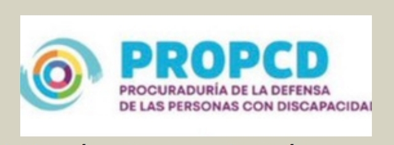
Municipio: Oaxaca de Juárez
Dirección: Vicente Guerrero No. 114. Col. Miguel Alemán, Oaxaca de Juárez.
¿Qué apoyo ofrece?
Brinda protección, orientación y asistencia en asuntos relacionados con los derechos de las personas con discapacidad. (Gobierno de Oaxaca)
PROCURADURÍA DE LA DEFENSA DE LAS PERSONAS CON DISCAPACIDAD
PROCURADURÍA DE LA DEFENSA DE LAS PERSONAS CON DISCAPACIDAD
Address: Vicente Guerrero 114, Miguel Alemán Valdez, 68120 Oaxaca de Juárez, Oax., México
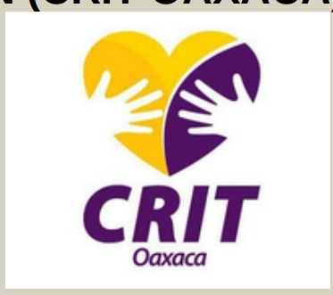
Municipio: San Raymundo Jalpan, Oaxaca
¿Qué apoyo ofrece?
Proporciona servicios de rehabilitación e inclusión principalmente para niñas, niños y adolescentes con discapacidad. El CRIT Oaxaca ha participado en programas de rehabilitación para personas con discapacidad en coordinación con instituciones gubernamentales. (Gobierno de México)
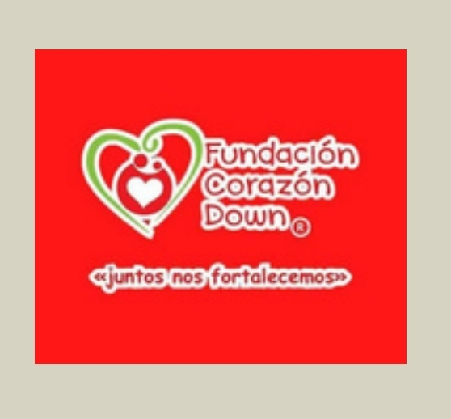
Municipio: Oaxaca de Juárez
Dirección: Xicoténcatl 1017, Barrio de la Noria, Oaxaca de Juárez.
Teléfono: 951 115 3091
¿Qué apoyo ofrece?
Organización enfocada en la atención y acompañamiento de personas con síndrome de Down y sus familias
Fundación Corazón Down
Fundación Corazón Down
Web
Address: Xicoténcatl 1017, Barrio de la Noria, 68100 Oaxaca de Juárez, Oax., México
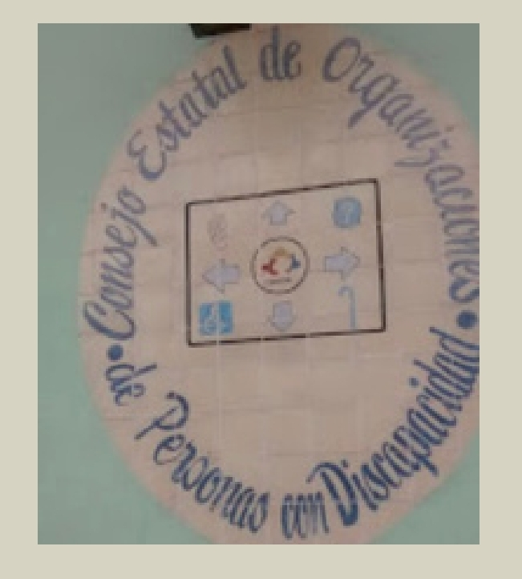
Municipio: Oaxaca de Juárez
Dirección: Murguía 802, Centro, Oaxaca de Juárez.
Teléfono: 951 513 8379
¿Qué apoyo ofrece?
Representa y promueve los intereses de organizaciones y personas con discapacidad en el estado de Oaxaca.
Consejo Estatal de Organizaciones de Personas Con Discapacidad del Estado de Oaxaca A.c.
Consejo Estatal de Organizaciones de Personas Con Discapacidad del Estado de Oaxaca A.c.
Address: Murguía 802, RUTA INDEPENDENCIA, Centro, 68000 Oaxaca de Juárez, Oax., México
Phone: +529515138379
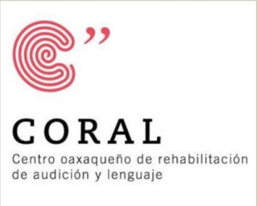
Municipio: Oaxaca de Juárez
Dirección: Privada de Sierra Negra No. 102, Col. Volcanes, Oaxaca, Oaxaca.
¿Qué apoyo ofrece?
Está orientado a la atención y rehabilitación relacionada con problemas de audición, lenguaje y comunicación.
Fuente: Directorio oficial de organizaciones registradas en Oaxaca: (Diario Oficial de la Federación)
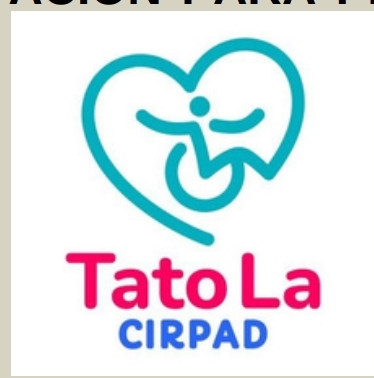
Municipio: Huajuapan de León
Dirección: Jazmín No. 27, Col. Jardines del Sur, Huajuapan de León, Oaxaca.
¿Qué apoyo ofrece?
Ofrece apoyo y servicios relacionados con la rehabilitación y atención de personas con discapacidad.
Fuente: Diario Oficial de la Federación, directorio de organizaciones de asistencia. (Diario Oficial de la Federación)
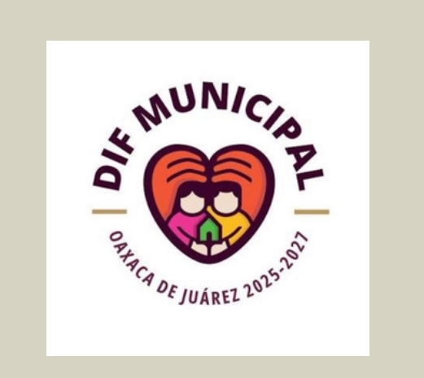
Municipio: Oaxaca de Juárez
Dirección: Etapa 6, Infonavit Primero de Mayo, Oaxaca de Juárez.
Teléfono: 951 400 1149
¿Qué apoyo ofrece?
Brinda servicios de asistencia social y canalización para personas y familias que requieren apoyo.
DIF Municipal de Oaxaca de Juárez
DIF Municipal de Oaxaca de Juárez
Web
Address: Esteban Baca Calderón, 6to Etapa INFONAVIT 1ro de Mayo, 68027 Oaxaca de Juárez, Oax., México
Phone: +529514001149
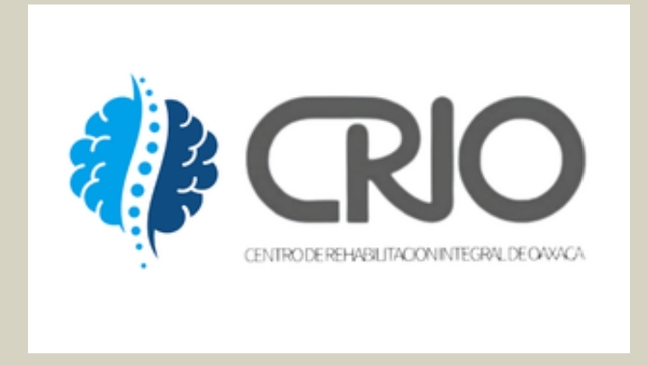
Municipio: Oaxaca de Juárez
Dirección: Huerto Los Olivos 207, Trinidad de las Huertas, Oaxaca de Juárez.
Teléfono: 951 103 8709
¿Qué apoyo ofrece?
Proporciona servicios de fisioterapia y rehabilitación física.
Centro de Rehabilitación Integral de Oaxaca
Centro de Rehabilitación Integral de Oaxaca
Web
Address: Huerto Los Olivos 207, Universidad, Trinidad de las Huertas, 68120 Oaxaca de Juárez, Oax., México
Phone: +529511038709
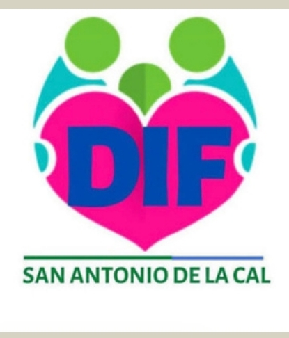
Municipio: San Antonio de la Cal
Dirección: Emiliano Zapata 66, 5.ª Sección Eucaliptos, San Antonio de la Cal, Oaxaca.
¿Qué apoyo ofrece?
Ofrece servicios relacionados con rehabilitación física para personas que requieren recuperación funcional.
Centro de Rehabilitación DIF Oaxaca
Centro de Rehabilitación DIF Oaxaca
Address: Emiliano Zapata 66, 5ta Seccioneucaliptos, 71235 San Antonio de la Cal, Oax., México
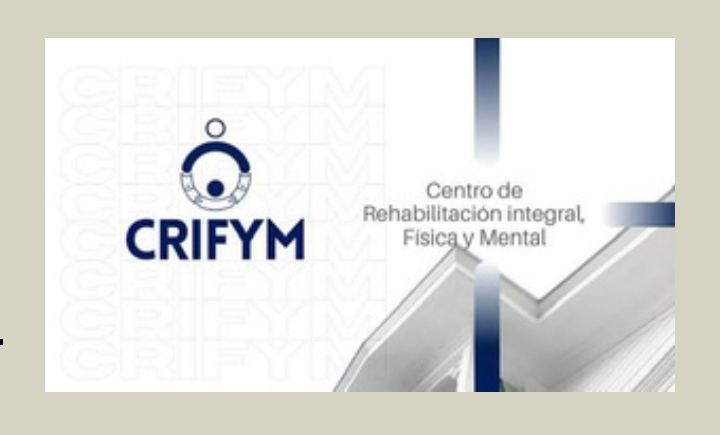
Municipio: Oaxaca de Juárez
Dirección: Sabinos 509, Col. Reforma, Oaxaca de Juárez.
Teléfono: 951 516 2257
¿Qué apoyo ofrece?
Ofrece atención médica relacionada con rehabilitación física y mental.
Centro de Rehabilitación Integral Física y Mental. Dr. Juan José Rosas Sumano
Centro de Rehabilitación Integral Física y Mental. Dr. Juan José Rosas Sumano
Web
Address: Sabinos 509, Reforma, 68050 Oaxaca de Juárez, Oax., México
Phone: +529515162257
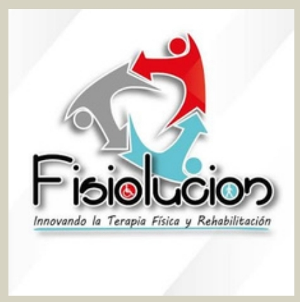
Municipio: Oaxaca de Juárez
Dirección: C. Pensamientos 404, Col. Reforma, Oaxaca de Juárez.
Teléfono: 951 470 1782
¿Qué apoyo ofrece?
Proporciona servicios de terapia física y rehabilitación.
Fisiolución Oaxaca - Centro de Terapia Física y Rehabilitación
Fisiolución Oaxaca - Centro de Terapia Física y Rehabilitación
Web
Address: C. Pensamientos 404, Reforma, 68050 Oaxaca de Juárez, Oax., México
Phone: +529514701782
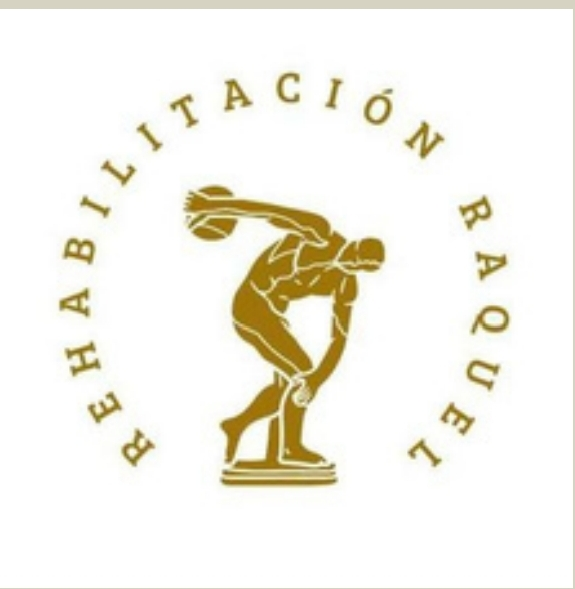
Municipio: Oaxaca de Juárez
Dirección: C. Pensamientos 708, Col. Reforma, Oaxaca de Juárez.
Teléfono: 951 513 4588
¿Qué apoyo ofrece?
Ofrece servicios de rehabilitación física y atención terapéutica.
Clínica de Rehabilitación Raquel
Clínica de Rehabilitación Raquel
Address: C. Pensamientos 708, Reforma, 68050 Oaxaca de Juárez, Oax., México
Phone: +529515134588
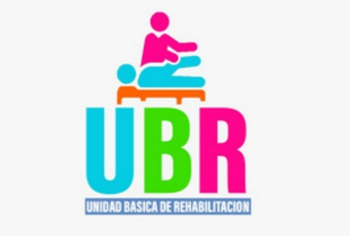
Municipio: Heroica Ciudad de Huajuapan de León
¿Qué apoyo ofrece?
Brinda atención de rehabilitación a personas con discapacidad y personas que requieren recuperar o mejorar su movilidad. El DIF Oaxaca ha reportado el equipamiento y funcionamiento de esta UBR. (Gobierno de Oaxaca)
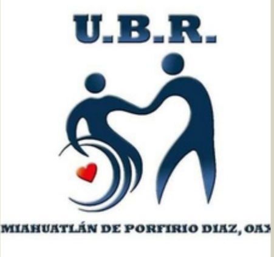
Municipio: Miahuatlán de Porfirio Díaz
¿Qué apoyo ofrece?
Proporciona atención a personas con lesiones o discapacidad para ayudar a recuperar o mejorar su movilidad. También se han realizado acciones de entrega de aparatos funcionales para población con discapacidad. (Gobierno de Oaxaca)
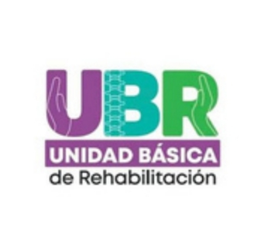
Municipio: Heroica Ciudad de Juchitán de Zaragoza
¿Qué apoyo ofrece?
Cuenta con servicios de rehabilitación que incluyen terapia física, estimulación temprana, nutrición, psicología, medicina general, electroterapia, mecanoterapia e hidroterapia. (Gobierno de Oaxaca)
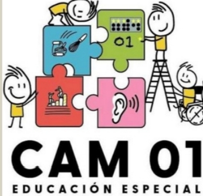
Municipio: Oaxaca de Juárez, Oaxaca
Dirección: Avenida Vicente Guerrero s/n, Col. Miguel Alemán, Oaxaca de Juárez, Oaxaca.
Teléfono: 951 514 7670, Cam 01
¿Qué apoyo ofrece?
Brinda educación especial escolarizada a niñas, niños y jóvenes con discapacidad, discapacidad múltiple o trastornos graves del desarrollo. Los CAM ofrecen atención desde educación inicial hasta secundaria y, en algunos casos, formación para la vida y el trabajo.
Directorio Nacional --- México
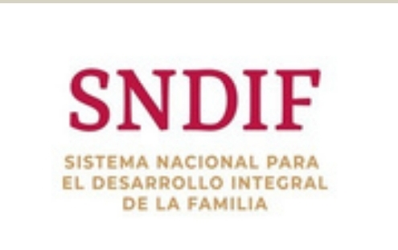
Dirección: Av. Emiliano Zapata No. 340, Col. Santa Cruz Atoyac, Alcaldía Benito Juárez, C.P. 03310, Ciudad de México.
Teléfono: 55 3003 2200
¿Qué apoyo ofrece?
Brinda servicios de asistencia social, rehabilitación, inclusión y credencialización para personas con discapacidad. El SNDIF también cuenta con módulos para la credencialización de personas con discapacidad.
Fuente: Gobierno de México — Sistema Nacional DIF. Sitio oficial del SNDIF
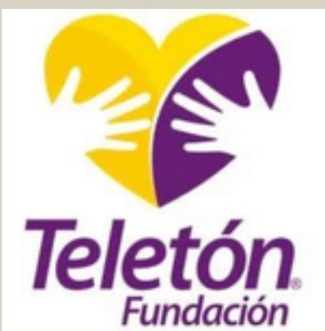
Dirección: Vía Gustavo Baz No. 219, Col. San Pedro Barrientos, C.P. 54010, Tlalnepantla, Estado de México.
Teléfono: 55 5321 2223
¿Qué apoyo ofrece?
Rehabilitación y atención integral para niñas, niños y adolescentes con discapacidad, además de servicios relacionados con autismo. Cuenta con Centros de Rehabilitación e Inclusión Teletón (CRIT).
Fuente: Fundación Teletón México, sitio oficial 2026. Fundación Teletón México
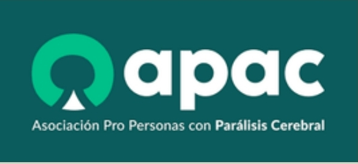
Dirección: Dr. Arce No. 104, Col. Doctores, Alcaldía Cuauhtémoc, C.P. 06720, Ciudad de México.
Teléfono: 55 9172 4620
¿Qué apoyo ofrece?
Rehabilitación y servicios de salud, educación integral, atención temprana y capacitación laboral para personas con parálisis cerebral.
Fuente: APAC, sitio oficial. APAC
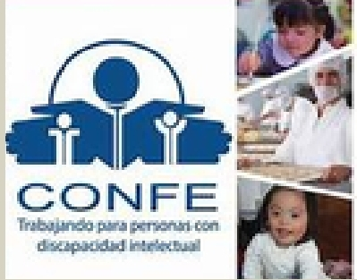
Dirección: Biznaga No. 43, Col. Belem de las Flores, Álvaro Obregón, C.P. 01110, Ciudad de México.
Teléfonos: 55 6732 6600 / 55 3997 8743 / 55 5292 1390
¿Qué apoyo ofrece?
Orientación a personas y familias, intervención temprana, capacitación, inclusión laboral y vinculación con organizaciones que trabajan por las personas con discapacidad intelectual.
Fuente: CONFE, Directorio institucional. CONFE
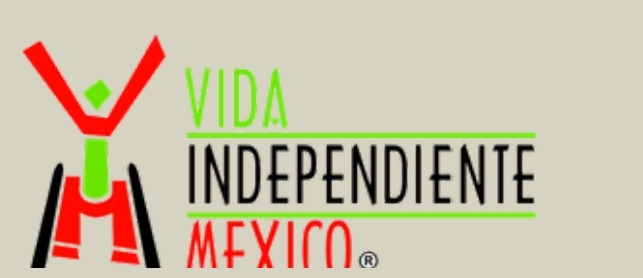
Dirección: Ciudad de México. Oficina: consultar ubicación actual directamente con la organización.
Teléfono: 55 4171 1220
¿Qué apoyo ofrece?
Promueve la vida independiente, autonomía, inclusión y participación social de personas con discapacidad, especialmente personas con discapacidad motriz.
Fuente: Vida Independiente México — Directorio institucional. Vida Independiente México
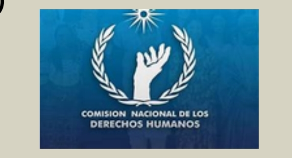
Dirección: Periférico Sur No. 3469, esquina Luis Cabrera, Col. San Jerónimo Lídice, Alcaldía Magdalena Contreras, C.P. 10200, Ciudad de México.
Teléfonos: 55 5681 8725 / 55 5490 7400 / 800 715 2000
¿Qué apoyo ofrece?
Orientación y asesoría sobre los derechos humanos de las personas con discapacidad y atención de posibles violaciones a sus derechos.
Fuente: CNDH — Mecanismo de discapacidad. CNDH
Dirección: Calle José Vicente Villada No. 423, Col. Francisco Murguía, C.P. 50130, Toluca, Estado de México.
Teléfono: 722 215 4317
¿Qué apoyo ofrece?
Orientación, vinculación y atención relacionada con discapacidad. También mantiene una red de instituciones que atienden diferentes tipos de discapacidad.
Fuente: Gobierno del Estado de México — IMEDIS. IMEDIS
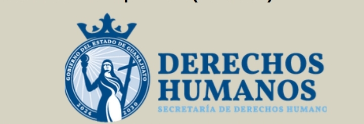
Dirección: Hacienda Silao No. 900, Col. La Hacienda, C.P. 36000, Silao, Guanajuato.
Teléfono: 472 117 9330
¿Qué apoyo ofrece?
Rehabilitación, terapia física y ocupacional, psicología, audiología, nutrición, órtesis y prótesis, certificados y credenciales de discapacidad e inclusión laboral.
Fuente: Gobierno del Estado de Guanajuato — INGUDIS. INGUDIS
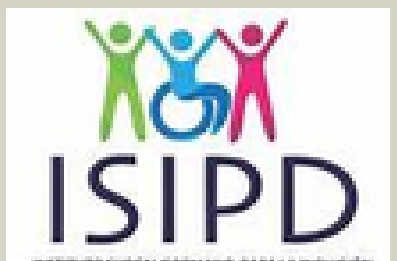
Dirección: Km 4.5 Carretera al Norte, entre Blvd. Luis Donaldo Colosio y Politécnico Nacional, Col. El Conchalito, C.P. 23090, La Paz, Baja California Sur.
Teléfono: 612 688 2271
¿Qué apoyo ofrece?
Promueve la inclusión, derechos y atención de las personas con discapacidad en Baja California Sur.
Fuente: Plataforma Estatal de Transparencia de Baja California Sur. Actualización: 11 de agosto de 2026. ISIPD Baja California Sur
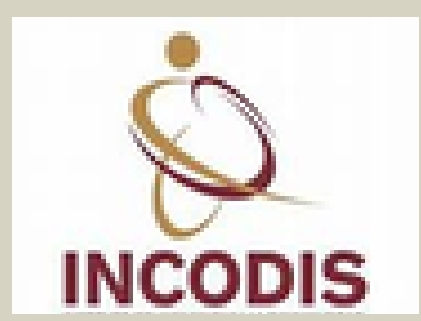
Dirección: Calle Encino No. 530, Rinconada del Pereyra, Colima, Colima.
Teléfonos: 312 313 9933 / 312 312 9260
¿Qué apoyo ofrece?
Apoyos funcionales, orientación y servicios relacionados con inclusión y atención a personas con discapacidad.
Fuente: Gobierno del Estado de Colima. Un documento oficial de 2026 confirma ambos teléfonos y el domicilio. Gobierno de Colima — INCODIS
Dirección: Calle 86B No. 499C entre 59 y 61, Centro, C.P. 97000, Mérida, Yucatán. Ex Penitenciaría Juárez.
Teléfono: 999 930 3340 ext. 23052
¿Qué apoyo ofrece?
Promueve la inclusión y el desarrollo de las personas con discapacidad, así como sus derechos y programas de atención.
Fuente: Gobierno del Estado de Yucatán — IIPEDEY. IIPEDEY
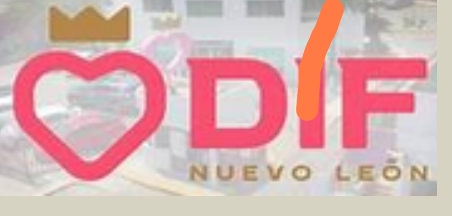
Dirección: Av. Lázaro Cárdenas No. 3701, Col. Valle de las Brisas, Monterrey, Nuevo León.
Teléfonos: 81 2020 8034 / 81 2020 8152
¿Qué apoyo ofrece?
Brinda servicios de rehabilitación y cuenta con programas de inclusión. También ofrece cursos de Lengua de Señas Mexicana (LSM) y trabaja en la inclusión laboral de personas con discapacidad. El Gobierno de Nuevo León publicó información sobre sus actividades durante 2026.
Fuente: Gobierno del Estado de Nuevo León — Sistema DIF Nuevo León.
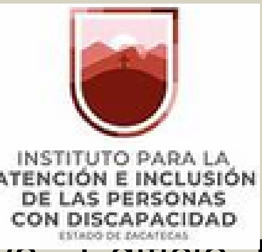
Dirección: Ciudad Administrativa, Edificio K, 2.º piso, Circuito Cerro del Gato, C.P. 98160, Zacatecas, Zacatecas.
Teléfono: 492 491 5000 ext. 46100
¿Qué apoyo ofrece?
Atención, orientación, credencialización y programas destinados a favorecer la inclusión de las personas con discapacidad.
Fuente: Gobierno del Estado de Zacatecas.
.png)
Dirección: Mariano Escobedo No. 532, Col. Anzures, C.P. 11590, Ciudad de México.
Teléfono: 800 ESCUCHA — 800 372 8242
¿Qué apoyo ofrece?
Apoya a personas con discapacidad auditiva mediante programas de inclusión y ayudas auditivas.
Fuente: Fundación MVS Radio.
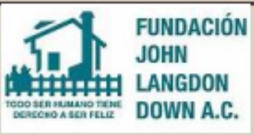
Dirección: Selva No. 4, Col. Insurgentes Cuicuilco, Alcaldía Coyoacán, Ciudad de México.
Teléfono: 55 5666 8580
¿Qué apoyo ofrece?
Atención, educación y apoyo especializado para personas con síndrome de Down y sus familias.
Fuente: Fundación John Langdon Down.
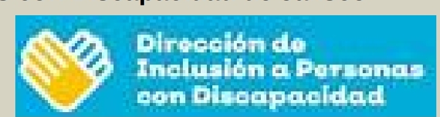
Dirección: Calle Jesús García No. 720, Col. Centro, Guadalajara, Jalisco.
Teléfono: 33 3169 2655
¿Qué apoyo ofrece?
Orientación y acciones para promover los derechos, accesibilidad e inclusión de las personas con discapacidad.
Fuente: Gobierno del Estado de Jalisco.
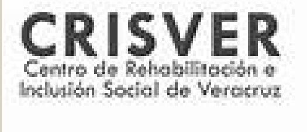
Dirección: Km 1.5 Carretera Xalapa–Coatepec, Col. Benito Juárez, C.P. 91070, Xalapa, Veracruz.
Teléfono: 228 842 3730 / 228 842 3737
¿Qué apoyo ofrece?
Servicios de rehabilitación e inclusión para personas con discapacidad, incluyendo atención especializada y terapias.
Fuente: Gobierno del Estado de Veracruz.
Dirección: Ignacio Romero y Blvd. Luis Encinas, Col. San Benito, C.P. 83190, Hermosillo, Sonora.
Teléfono: 662 210 9389
¿Qué apoyo ofrece?
Programas de atención, rehabilitación y apoyos dirigidos a personas con discapacidad.
Fuente: Sistema DIF Sonora — información institucional 2026.
Dirección: Calzada México-Xochimilco No. 289, Col. Arenal de Guadalupe, Alcaldía Tlalpan, C.P. 14389, Ciudad de México.
Teléfono: 55 5999 1000
¿Qué apoyo ofrece?
Brinda atención médica y servicios especializados de rehabilitación para personas con discapacidad. También ofrece formación para cuidadores de personas con discapacidad, incluyendo técnicas de movilidad, atención segura, manejo de órtesis y prótesis y autocuidado. En 2026, la Secretaría de Salud informó sobre sus programas de capacitación para cuidadores.
Fuente: Secretaría de Salud — Instituto Nacional de Rehabilitación Luis Guillermo Ibarra Ibarra, 2026.
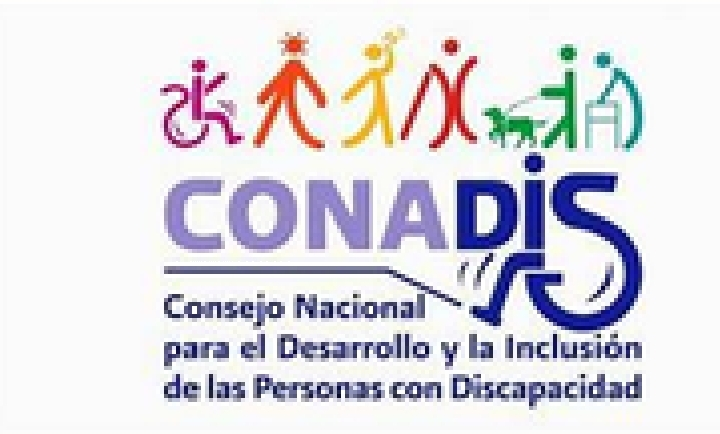
Dirección: Av. Paseo de la Reforma No. 51, piso 15, Col. Tabacalera, C.P. 06030, Ciudad de México.
Teléfono: Consultar el contacto institucional vigente en el portal oficial.
¿Qué apoyo ofrece?
Coordina y promueve políticas públicas para garantizar los derechos, inclusión y participación de las personas con discapacidad en México.
Fuente: Gobierno de México — CONADIS. El portal institucional mantiene publicaciones y documentación actualizada durante 2026.
Organizaciones a Nivel Mundial
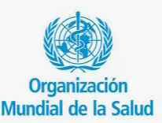
Sede: Avenue Appia 20, 1211 Ginebra, Suiza.
Teléfono: +41 22 791 21 11
¿Qué apoyo ofrece?
Trabaja a nivel mundial para mejorar la salud y el bienestar de las personas con discapacidad, promover la rehabilitación, la accesibilidad y la inclusión dentro de los sistemas de salud. La OMS impulsa la iniciativa Rehabilitation 2030.
Fuente: Organización Mundial de la Salud
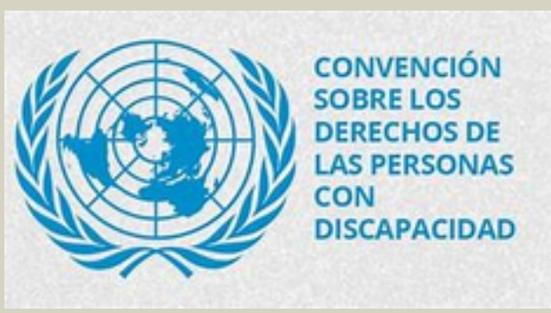
Sede: Nueva York, Estados Unidos.
Teléfono: +1 212 963 1234
¿Qué apoyo ofrece?
Promueve los derechos humanos, la igualdad y la inclusión de las personas con discapacidad a nivel mundial. La ONU cuenta con una Estrategia de Inclusión de la Discapacidad para mejorar la inclusión dentro de su trabajo y programas.
Fuente: Naciones Unidas — Disability Inclusion Strategy.
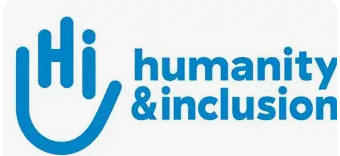
Sede: 138, avenue des Frères Lumière, CS 88379, 69371 Lyon Cedex 08, Francia.
Teléfono: +33 (0) 4 78 69 79 79
¿Qué apoyo ofrece?
Trabaja junto a personas con discapacidad y poblaciones vulnerables. Brinda apoyo en rehabilitación, inclusión, atención humanitaria y defensa de los derechos de las personas con discapacidad.
Fuente: Humanity & Inclusion
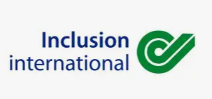
Sede: 20 Garrett Street, London EC1Y 0TW, Reino Unido.
Teléfono: Consultar contacto internacional.
¿Qué apoyo ofrece?
Es una red mundial formada por personas con discapacidad intelectual y sus familias. Promueve la participación, igualdad de oportunidades, inclusión comunitaria y defensa de derechos.
Fuente: Inclusion International.
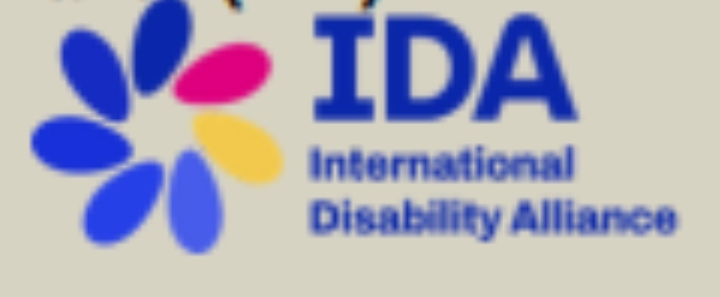
Sede: Ginebra, Suiza.
Teléfono: Consultar contacto internacional.
¿Qué apoyo ofrece?
Es una alianza internacional de organizaciones representativas de personas con discapacidad. Trabaja para promover los derechos humanos, la participación y la aplicación de la Convención de la ONU sobre los Derechos de las Personas con Discapacidad. La OMS la reconoce dentro de sus redes internacionales de discapacidad.
Fuente: International Disability Alliance.
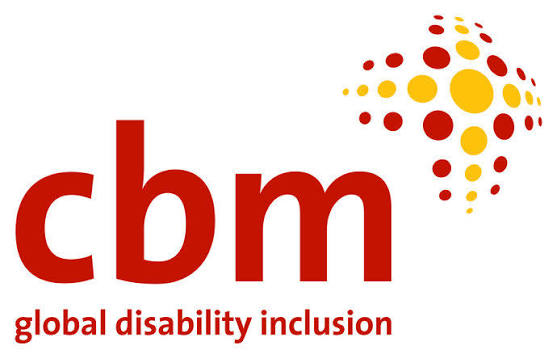
Sede: Van Heuven Goedhartlaan 13D, 1181 LE Amstelveen, Países Bajos.
Teléfono: Consultar contacto internacional oficial.
¿Qué apoyo ofrece?
Trabaja con personas con discapacidad en países de bajos recursos. Desarrolla programas de inclusión comunitaria, salud ocular, rehabilitación, acción humanitaria y defensa de los derechos de las personas con discapacidad.
Fuente: CBM Global Disability Inclusion, 2026.
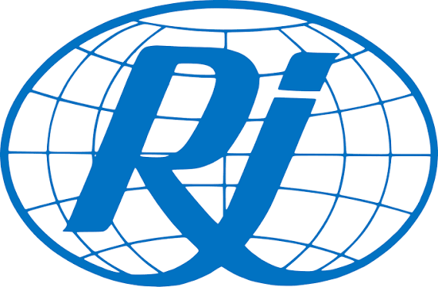
Sede: Nueva York, Estados Unidos.
Teléfono: Consultar contacto internacional.
¿Qué apoyo ofrece?
Promueve la rehabilitación, accesibilidad e inclusión de personas con discapacidad. Participa en iniciativas internacionales relacionadas con derechos, rehabilitación y desarrollo inclusivo. La OMS la incluye entre los miembros de su Disability Health Equity Network.
Fuente: Rehabilitation International.
Sede: Helsinki, Finlandia.
Teléfono: Consultar contacto internacional.
¿Qué apoyo ofrece?
Representa a personas sordas y organizaciones de personas sordas a nivel mundial. Promueve los derechos humanos, la lengua de señas, la educación y la igualdad de oportunidades para las personas sordas.
Fuente: World Federation of the Deaf. La OMS la reconoce dentro de sus organizaciones internacionales relacionadas con discapacidad.
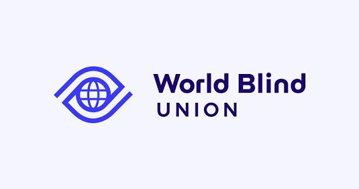
Sede: Toronto, Canadá.
Teléfono: Consultar contacto internacional.
¿Qué apoyo ofrece?
Representa a personas ciegas y con discapacidad visual a nivel mundial. Trabaja para promover sus derechos, accesibilidad, educación, empleo y participación plena en la sociedad.
Fuente: World Blind Union. La OMS la incluye entre las organizaciones de su red internacional sobre discapacidad y equidad en salud.
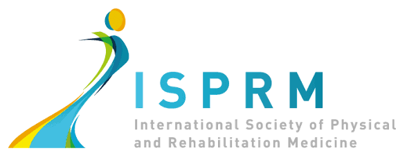
Sede: Organización internacional de medicina física y rehabilitación.
Teléfono: Consultar contacto internacional.
¿Qué apoyo ofrece?
Promueve la medicina física y de rehabilitación a nivel internacional. Trabaja para mejorar la atención, investigación, educación y práctica profesional relacionada con la rehabilitación y el funcionamiento de las personas. La OMS la incluye entre los miembros de la World Rehabilitation Alliance.
Fuente: International Society of Physical and Rehabilitation Medicine.
Bibliografías --- Nivel Estatal
- Sistema DIF Oaxaca: difoaxaca.gob.mx
- CREE Oaxaca: Gobierno del Estado de Oaxaca – CREE
- Centro de Rehabilitación Integral DIF Bienestar: DIF Oaxaca – Área de Bienestar
- CECYD: Gobierno de Oaxaca – CECYD
- Procuraduría de la Defensa de las Personas con Discapacidad: Gobierno de Oaxaca – PROPCD
- CRIT Oaxaca: Teletón – CRIT
- Fundación Corazón Down: fundacioncorazondown.org
- Consejo Estatal de Organizaciones de Personas con Discapacidad: No encontré una página oficial vigente.
- CORAL – Centro Oaxaqueño de Rehabilitación de Audición y Lenguaje: No encontré una página oficial vigente.
- Centro Interactivo TATO LA: No encontré una página oficial vigente.
- DIF Municipal de Oaxaca de Juárez: No encontré una página oficial específica vigente.
- Centro de Rehabilitación Integral de Oaxaca: No encontré una página oficial institucional vigente.
- Centro de Rehabilitación DIF Oaxaca: No encontré una página oficial específica vigente.
- Centro de Atención Múltiple – IEEPO
- Centro de Rehabilitación Integral Física y Mental Dr. Juan José Rosas Sumano: CRIFYM
- Fisiolución Oaxaca: No encontré una página web institucional confirmada.
- Clínica de Rehabilitación Raquel: No encontré una página web institucional confirmada.
- Unidad Básica de Rehabilitación de Huajuapan de León: DIF Municipal de Huajuapan de León
- Unidad Básica de Rehabilitación de Miahuatlán de Porfirio Díaz: Gobierno de Oaxaca – UBR Miahuatlán
- Unidad Básica de Rehabilitación de Juchitán de Zaragoza: Gobierno de Oaxaca – UBR Juchitán
Bibliografías --- Nivel Nacional
- Gobierno de México. Sistema Nacional DIF. Credencialización de las personas con discapacidad. 2026. https://www.gob.mx/difnacional
- Fundación Teletón México. Teletón México. Consulta 2026. https://teleton.org
- APAC, I.A.P. Asociación Pro Personas con Parálisis Cerebral. Consulta 2026. https://apac.mx
- CONFE. Confederación Mexicana de Organizaciones en Favor de la Persona con Discapacidad Intelectual. Consulta 2026.
- Vida Independiente México. Directorio institucional. Consulta 2026. https://vidaindependientemexico.com
- Comisión Nacional de los Derechos Humanos. CNDH. Consulta 2026. https://www.cndh.org.mx
- Gobierno del Estado de México. Instituto Mexiquense para la discapacidad. Consulta 2026. https://imedis.edomex.gob.mx
- Gobierno del Estado de Guanajuato. Instituto Guanajuatense para las Personas con Discapacidad. Consulta 2026. https://ingudis.guanajuato.gob.mx
- Gobierno de Baja California Sur. Instituto Sudcaliforniano para la Inclusión de las Personas con Discapacidad. Actualización 2026. https://plataforma-transparencia.bcs.gob.mx/instituciones/isipd
- Gobierno del Estado de Colima. Instituto Colimense para la Discapacidad. Consulta 2026. http://www.incodis.col.gob.mx/
- Gobierno del Estado de Nuevo León - Sistema DIF Nuevo León. Consulta 2026. https://www.nl.gob.mx/es/taxonomy/term/429
- Gobierno del Estado de Yucatán. Instituto para la Inclusión de las Personas con Discapacidad del Estado de Yucatán. Consulta 2026. https://www.yucatan.gob.mx/gobierno/ver_dependencia.php?id=86&utm_source
- Gobierno del Estado de Zacatecas. Instituto para la Atención e Inclusión de las Personas con Discapacidad. Consulta 2026. https://www.zacatecas.gob.mx/gobierno/dependencias/inclusion
- Fundación MVS Radio. Programas de inclusión para personas con discapacidad auditiva. Consulta 2026. https://fundacionmvsradio.org
- Fundación John Langdon Down, A.C. Servicios de atención. Consulta 2026. https://fjldown.org
- Gobierno del Estado de Jalisco. Dirección de Inclusión a Personas con Discapacidad. Consulta 2026. https://info.jalisco.gob.mx/area/direccion-de-inclusion-personas-con-discapacidad
- Gobierno del Estado de Veracruz. Centro de Rehabilitación e Inclusión Social de Veracruz. Consulta 2026. https://www.difver.gob.mx/rehabilitacion/
- Sistema DIF Sonora. Atención a personas con discapacidad. Consulta 2026. https://dif.sonora.gob.mx
- Secretaría de Bienestar. Pensión para el Bienestar de las Personas con Discapacidad Permanente 2026. https://www.gob.mx/bienestar/documentos/personas-con-discapacidad-250279
- Instituto Nacional de Rehabilitación Luis Guillermo Ibarra Ibarra (INRLGII). Consulta 2026. https://www.inr.gob.mx/
Bibliografías --- Nivel Mundial
- Organización Mundial de la Salud (OMS). World Rehabilitation Alliance. 2026. https://www.who.int/initiatives/world-rehabilitation-alliance
- Naciones Unidas. United Nations Disability Inclusion Strategy. 2026. https://www.un.org/en/disabilitystrategy
- CBM Global Disability Inclusion. Disability Inclusion. 2026. https://cbm-global.org
- Humanity & Inclusion (HI). 2026. https://www.hi.org
- Inclusion International. Red internacional de personas con discapacidad intelectual y sus familias. 2026. https://inclusion-international.org
- International Disability Alliance. International Disability Alliance. 2026. https://www.internationaldisabilityalliance.org
- Rehabilitation International. Rehabilitation International. 2026. https://www.riglobal.org
- World Federation of the Deaf. World Federation of the Deaf. 2026. https://wfdeaf.org
- World Blind Union. World Blind Union. 2026. https://wbu.ngo
- International Society of Physical and Rehabilitation Medicine. ISPRM. 2026. https://isprm.org